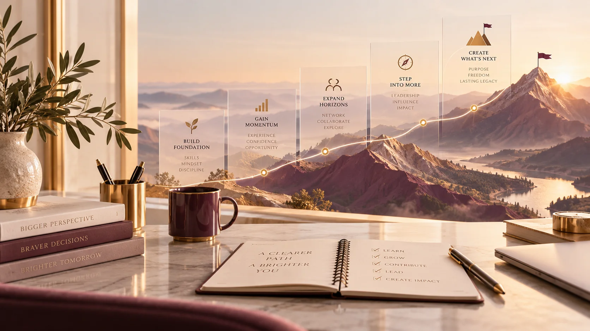
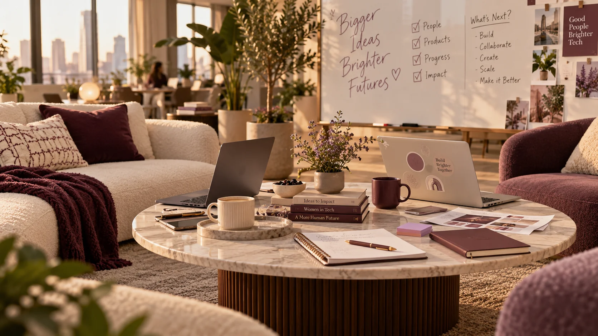

Perjalanan saya dimulai dari Android, lalu berkembang ke full-stack dan AI.
* Remote dari Yogyakarta · Beberapa periode pekerjaan tumpang tindih

“Apakah fitur ini
sudah bisa digunakan?”
“Apa dampak, kualitas, dan risikonya bagi pengguna?”
Ilustrasi perubahan fokus profesional — sesuaikan dengan pengalaman dan definisi sukses pribadi.
Tantangan produk membawa saya melangkah dari mobile ke web, backend, data, dan AI.
Pilih salah satu dengan mengangkat tangan. Tidak perlu membuka HP.
Sebelum mengatakan sebuah fitur “selesai”, periksa tiga hal.
Benarkah solusi menjawab masalah pengguna?
Bagaimana dengan data, keamanan, dan operasi?
Apakah perilakunya sudah diuji di kondisi relevan?
Satu proyek yang selesai dan bisa diperiksa lebih berguna daripada daftar tools yang panjang.

Contoh: aplikasi pemesanan kelas dengan masalah booking manual.
Booking masih manual
Desain alur dan API
Uji edge cases
Demo yang berfungsi
Apa yang kamu cek lebih dulu? Pilih satu, lalu jelaskan alasannya ke orang di sebelahmu.
Mulai dari memahami satu komponen hingga bertanggung jawab atas keputusan lintas sistem.
Mengerjakan tugas, bertanya, dan menerima feedback
Mengelola fitur end-to-end dan dependensinya
Menimbang risiko, dampak, dan trade-off
Pilih satu dalam hati. Bukti apa yang membuatmu berpikir begitu?
Bukan untuk menebak masa depan, tetapi untuk menguji arah dengan bukti.
Peluang terbuka ketika kualitas kerja, komunikasi, dan kontribusi kita terlihat. Komunitas membantu memperluas akses dan feedback.
Tuliskan langkahmu di HP atau catatan pribadi sekarang.